Snow reports · Snow forecasts
Daily snow reports for skiers: where the snow is, what is coming and where to ski, from the SnowScope snow map and measuring stations. Every number comes from that day's data.

Prà Alpesina will see 57 cm of new snow by 26 November. Forecast data from 23 November shows heaviest falls on 25 November as freezing level rises.

La Pierre Saint-Martin snow forecast: up to 42 cm expected by 26 November (Pyrenees). At Astun, the freezing level reaches 1,960 m to 3,170 m on 24 …

Whistler Blackcomb will receive 101 cm of new snow by November 25, far exceeding early-season norms. Mount Cain Alpine Park leads the region with 132 cm forecast.

Wildcat Mountain forecast to gain 56 cm over 14 days. Week one (23–29 Nov) brings 29 cm, with 22 cm falling on 27 November. Data from 22 November.

Mixed rain and snow at Hurricane Ridge through 25 November. Up to 24 in (61 cm) forecast near the top; rain falls below 4,528 ft (1,380 m). Data from 22 November.

Mount Washington Alpine Resort forecast to receive 359 cm of new snow in the next 14 days, with the heaviest falls in week one. Data from 22 November 2026.

The 0 °C level rises to 3200 m on Tuesday, bringing rain to mid-mountain slopes. Snow line stays above base at most resorts until Wednesday.

The Alps will collect up to 95 cm of new snow in the next 14 days, with 63% arriving in the first week. Best conditions above 1500 m from November 23. Data from November 22.

By 25 November, 64 cm of new snow forecast at Jungfraujoch Snow Fun Park. Data from 22 November.

Jungfraujoch leads Europe with 44 cm in 24 hours; Mount Cain Alpine Park forecast for 132 cm in 72 hours. Forecast from 2026-11-22.

The 0 °C level reaches 12,861 ft (3,920 m) on 21 November in the US Northeast. Snow line peaks at 11,811 ft (3,600 m), above all resort tops.

The forecast shows up to 199 cm across the US West in the next two weeks, with the heaviest snow arriving in week one. Data from 21 November 2026.

Mt Baker will see 22 cm of new snow by November 24, but the freezing level rises above 1,000 m on November 22, bringing rain-on-snow risk to lower slopes.
Two-week snow forecast for Western Canada: Mount Washington Alpine Resort forecast to receive 202 cm by 5 December, with the heaviest snow on 24 November.

Mount Washington Alpine Resort leads with 76 cm of new snow forecast by 24 November. Data from 21 November 2026.

No snow on Atlas pistes on 21 November. High summits hold 1 cm at most. All three resorts are bare; the next storm may take weeks.

0 °C level in the Alps next days: 1,330–3,210 m. Snow line peaks at 2,900 m on 22 November. Rain-on-snow risk at mid-mountain resorts Sunday 22 November.
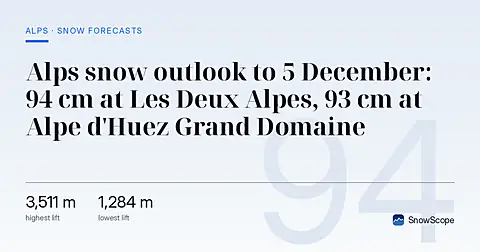
Fourteen days of new snow across the Alps from 22 November to 5 December: Les Deux Alpes gets about 94 cm, with 73% arriving in week one. Data from 21 November.

La Pierre Saint-Martin receives 18 cm of new snow over the next days. Forecast for the Pyrenees from 21 November shows most snow above 1,900 m.

Rain falls on thin snow through Saturday as the freezing level stays high; Sunday's shift brings 32 resorts into snow cover and 20 cm forecast at Candanchu.

Mixed rain and snow expected across the Pyrenees over the next three days, with the freezing level rising above resort summits by Sunday. New snow forecast between 13–24 cm at altitude.

Alpe d'Huez will receive the most snow in the Alps over the next 72 hours. Beartooth Basin Summer leads the US West and Canada in fresh snow through Sunday.
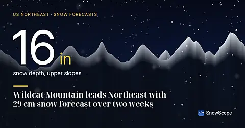
Wildcat Mountain will receive the most snow in the Northeast over the next 14 days, with 29 cm forecast by our models as of November 19.

New snow will reach the Pyrenees in two waves over 14 days, with 91 cm forecast at high altitude. The first week brings 49 percent of the total; week 2 stays steady. Data from 19 November.
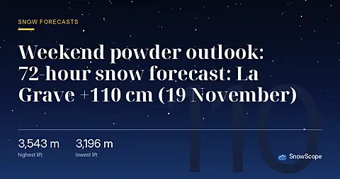
How much snow will the mountains gain? Our table shows the resorts with the most new snow forecast for the next 24 hours and until 22 November, in …

China Peak will receive 33 in (83 cm) of snow by 21 November. Forecast issued 18 November for the US West.

Western Canada forecast: 90 cm new snow at Mount Washington in the next two weeks, with 70 cm expected in late November and early December.

Zermatt has 47 cm on upper slopes today, 690% above the November median. The 0°C level stays above 2200 m through Friday.

The 0 °C level swings between 1,900 m and 3,670 m across the Pyrenees 19–21 November. Where does rain turn to snow at each resort?

The Pyrenees will gain up to 63 cm of new snow in the next 14 days, with 70% arriving before 25 November. Data from 18 November.

New snow forecast for the Alps through early December. Saint François Longchamp leads with 228 cm expected over 14 days, starting with 35 cm on Thursday.

No new snow expected at Jbel Hebri or Oukaïmeden in the next 14 days. The Atlas will see less than 1 cm total through early December, based on the forecast for 18 November.

Alpine snow forecast 18 November: 110 cm expected at Orelle, 105 cm at Les Grands Montets. Best snow arrives Thursday and Friday.

Orelle leads the global forecast with 110 cm in 72 hours. Europe dominates; North America trails. Data from 18 November.


96 cm of new snow forecast for Les Arcs over the next three days, with today bringing the heaviest falls.

The two-week picture in the US West, 17 November to 30 November, drawn from the two forecasts that reach two weeks, ECMWF and GFS. Middle of the …

Orelle reached 31 cm by 16 November, up 17 cm in one week. The Alps are forecast to get up to 103 cm more snow by 19 November.

The Atlas holds just 20 km² of snow on 15 November, all on high summits up to 4 cm deep. No snow at ski resorts; none forecast through 18 November.

79 cm new snow forecast for Les Grands Montets from 16–18 November, mostly above 2000 m elevation, based on forecast from 15 November.

At Andermatt (2963 m) the forecast gives 75 mm of precipitation from 15 November to 20 November. During the wet hours the 0 °C level stands near 2160

Courmayeur leads forecast with 88 cm in 72 hours; snow depth is at 142 percent of normal for mid-November as of November 15 data.

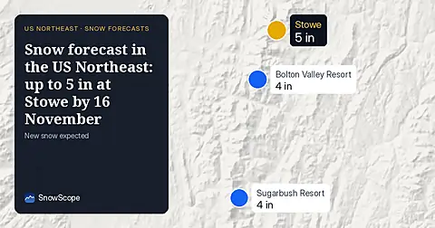
5 in (12 cm) expected at Stowe by 16 November. Most snow falls 14-15 November on upper slopes. Data from 13 November.

The snow is not done yet: we expect 13 in (34 cm) at Bear Valley, 13 in (34 cm) at Dodge Ridge and 13 in (33 cm) at Badger Pass by 16 November. A …

Revelstoke snow forecast: up to 10–21 cm expected by 16 November (Western Canada). At Whistler Blackcomb, the freezing level reaches 1,500 m to …
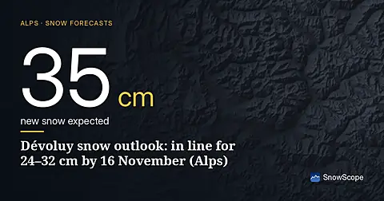
Dévoluy snow outlook: in line for 24–32 cm by 16 November (Alps). The next few days look decidedly unsettled in the Alps, with the heaviest snow …
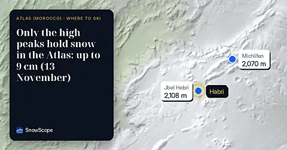
Snow retreats to the highest summits in the Atlas. The three ski resorts have no snow today; 40 km² of peaks stay white. More melt ahead.

The 0 °C level across the Pyrenees ranges from 2,230 m to 2,820 m over the next days. Snow stays safe from rain as the snow line sits low at each resort.

Whistler Blackcomb leads a 72-hour snow surge with 88 cm forecast by November 16, 2026. Major snowfall also expected across the Alps and US Sierra.

On 12 November the 0 °C level in the US Northeast ranges from 591 ft to 4,593 ft. The snow line sits 300 m lower, so rain hits the base at most resorts while upper slopes stay dry.

Between 1,380 m and 3,410 m: that is where our forecast puts the 0 °C level in Western Canada over the next days. In the warmest hours the snow line, …

Pyrenees two-week snow forecast: Gavarnie-Gèdre heads 6 resorts with 36 cm of new snow by 26 November. Data 12 November.

Sugarbush Resort tops the Northeast with 22 cm of new snow forecast over 14 days starting 13 November. First week brings most of the total.

Western Canada mountains carry 42% of their normal snow for mid-November as of 12 November, but 142 cm is forecast over the next two weeks.

Saint François Longchamp sits at just 3 cm of snow, 12% of usual depth for this time, but 110 cm is forecast in the next two weeks.
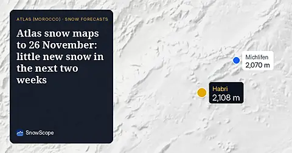
Two-week snow forecast for Atlas resorts shows virtually no new snow expected from 13 to 26 November. SnowScope maps data from 12 November.
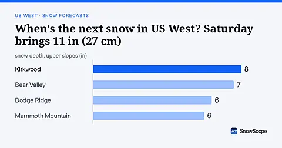
Forecast from November 12: US West gets 11 in (27 cm) of new snow Saturday November 14; 56 resorts receive powder, busy week starts.

Kirkwood snow outlook: in line for 16 in by 15 November (US West). The next few days look decidedly unsettled in the US West, with the heaviest snow …
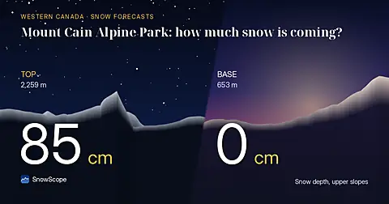
Mount Cain Alpine Park: how much snow is coming? 37 cm by 15 November. How much snow is coming in Western Canada, and where? Until 15 November, our …

Atlas snow report, 12 November. Atlas ski resorts today: no snow on the slopes. Snow only on the top summits: about 40 km² of white ground, 10 cm at …
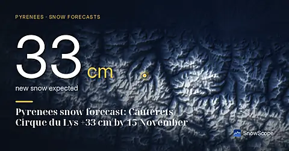
Pyrenees snow report, 12 November. Looking ahead to 15 November, the forecast brings 33 cm at Cauterets Cirque du Lys, 29 cm at Piau-Engaly and 25 cm …

Les Deux Alpes snow forecast compared with the region: 51 cm by 14 November. The snow cover shrank from 45,820 km² on 9 November to 38,440 km² today, …

Only the highest peaks hold snow in the Atlas today: 20 km² white, 6 cm deep. The ski slopes are bare. Data from 11 November.

Okemo Mountain will get 15 in (38 cm) of new snow by November 14, with 11 in (29 cm) on November 13, SnowScope from November 11 shows.

Freezing level climbs to 13,000 ft (3,960 m) at Aspen Snowmass, creating rain-on-snow risk as temperatures warm mid-November (forecast from 11 Nov data).

Mt.

La Grave leads the Alps with 52 cm forecast in 24 hours as of 11 November; early snow arrives weeks before peak accumulation.

On November 10, the freezing level reaches 5,313 ft (1,620 m) above Northeast summits, bringing rain before 20–25 cm of snow arrives.

Northeast forecast made 10 November: 10 in (25 cm) of new snow arriving through 13 November will transform snow cover from 1 resort to 62.

Pyrenees freezing level 10 November: 0 °C ranges from 2,420 m to 3,710 m across the region. Snow line peaks at 3,400 m; rain-on-snow risk on three days.

Only 8 cm of snow sits on the highest Atlas peaks today. No snow at any ski resort. Cover is shrinking fast through mid-November.

Piau-Engaly leads the forecast with 37 cm of new snow by 13 November; 24 cm is expected on 12 November.

Whistler Blackcomb leads with 53 cm in 72 hours. Snow forecast across Europe, US and Canada on 10 November.

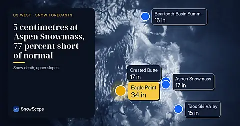
Aspen Snowmass at 5 centimetres, 23 percent of normal for mid-November. Freezing levels above 2,600 metres brought rain instead of snow across the US West on November 8.

Freezing level reaches 3400m–3600m over the next three days, bringing rain to the snowpack from 09–11 November. Forecast from 08 November.

Whistler Blackcomb gained 24 cm in one week to 50 cm total; 62 cm more forecast in 72 hours as major storms hit mountains (8 November data).

A wet Pacific storm brings 92 cm of new snow to Whistler's upper slopes but rain to the North Shore. Data from 7 November.
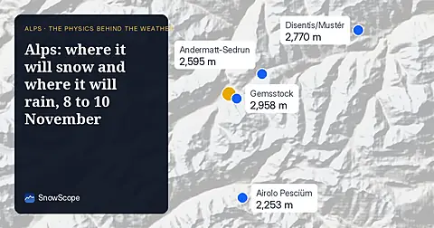
Snow line forecast 2,190–2,850 m from 8–10 November. Upper slopes get snow; valleys stay wet. Data from 7 November.

Snow line near 3,710 m from 8 to 12 November: rain at Oukaïmeden and Imlil, snow on Toubkal's summit. Map and chart.

About 192 mm of water on Whistler's upper slopes from 7 to 12 November: the 0 °C level swings between 1,410 and 2,920 m, snow up high, rain below.

More snow is on the way: by 10 November our forecast gives 103 cm at Whistler Blackcomb, 99 cm at Ski Callaghan and 74 cm at Mount Cain Alpine Park. …

Mt Baker: 8 in (21 cm) at the summit versus less than 1 in (2 cm) at the base. November forecast shows how this height gap will shift.

About 65 mm on Toubkal by 12 November, but the 0 °C level stays near 4,000 m: rain at Oukaïmeden and in the valleys, snow only on the top.

Orcières Merlette leads the Alps forecast with 36 cm of new snow in the next three days, mostly on November 9–10, based on data from November 7.

The Atlas ski resorts have no snow today. Only 80 km² of white ground remains on the highest peaks, with the deepest at 9 cm. Data from 7 November.

Whistler Blackcomb leads with 103 cm forecast in 72 hours. Orcières Merlette tops Europe with 36 cm. Data from 6 November.

Mt Baker leads the US West with 19 in (47 cm) of upper snow, expecting 13 in (33 cm) through November 9. Model forecast from November 6.

Ski Eldorado forecast 11 cm of new snow but freezing level reaches 3460 m on Nov 6, delaying snow arrival across the Northeast.
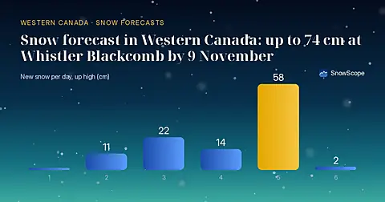
More snow is on the way: by 9 November our forecast gives 74 cm at Whistler Blackcomb, 63 cm at Ski Callaghan and 50 cm at Mount Cain Alpine Park. …

Oukaimden (Morocco) has the deepest snow in the Atlas (Morocco) today, with about 1 cm on its upper slopes. Habri follows with 0 cm, then Michlifen …

Whistler Blackcomb forecast: 74 cm in 72 hours; weeks 13, 12, 11 bring the year's deepest snow historically. Forecast from 5 November.
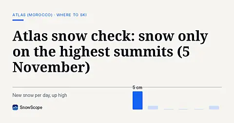
The Atlas has snow only above 3,000 m today: 60 km² on the highest ground, with 11 cm at most. No snow at the three ski resorts.

The Alps will see 21 cm of new snow at Saas Grund by 8 November. Forecast data from 5 November shows where and when snow falls across five key resorts.

Mt Baker will receive 16.5 in (42 cm) of new snow through November 8, leading the US West, based on our model run on November 5.

More snow is on the way: by 8 November our forecast gives 94 cm at Whistler Blackcomb, 93 cm at Ski Callaghan and 70 cm at Tweedsmuir Ski Club. Keep …

Whistler Blackcomb sits at 27 cm on 5 November, only 41 per cent of normal for this date. A major system brings 22 cm snow in the next 24 hours.

Rain will replace snow at Mt Baker on November 6, as the freezing level climbs to 8,957 ft (2,730 m), far above the ski area.

Ski Callaghan leads Western Canada forecast with 48 cm new snow through 7 November, mostly on 6th, with higher elevations capturing deeper accumulation.

Ski Callaghan leads all resorts with 48 cm forecast in 72 hours. SnowScope ranks snow forecasts across Europe, North America, and Canada on 4 November.

More snow is on the way: by 6 November our forecast gives 37 cm at Chabanon, 34 cm at Dévoluy and 33 cm at Chaillol.

Western Canada's ski resorts hold snow at 18 percent of early-season norms as of November 3, with Mount Cain leading and lower elevations lagging far behind.

Chabanon leads the Alps with 37 cm forecast in 72 hours. Mt Baker tops the US West with 11 in (28 cm). Ski Callaghan heads Canada with 33 cm by 6 November.